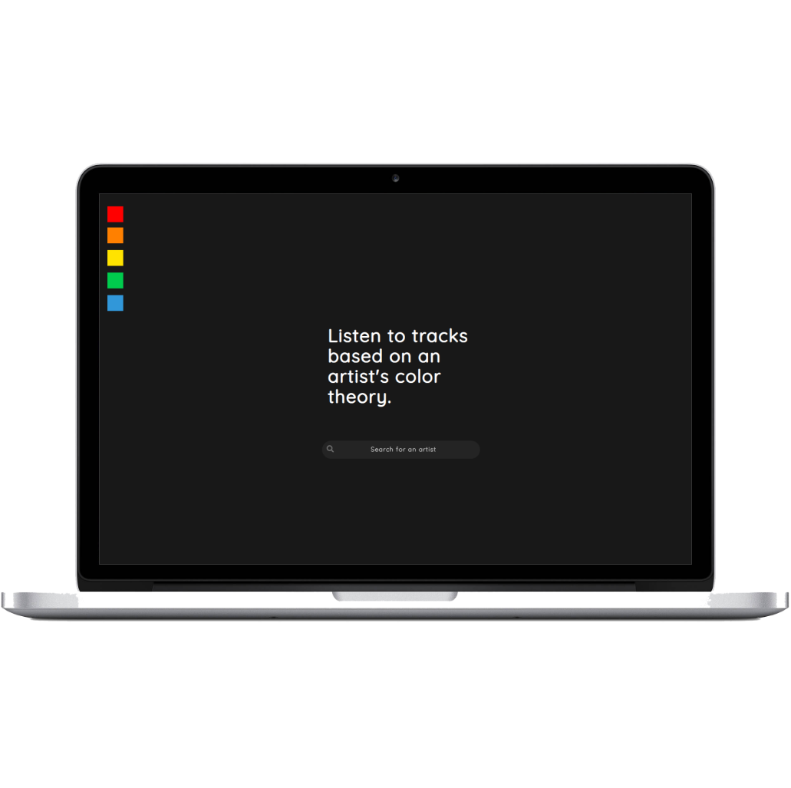
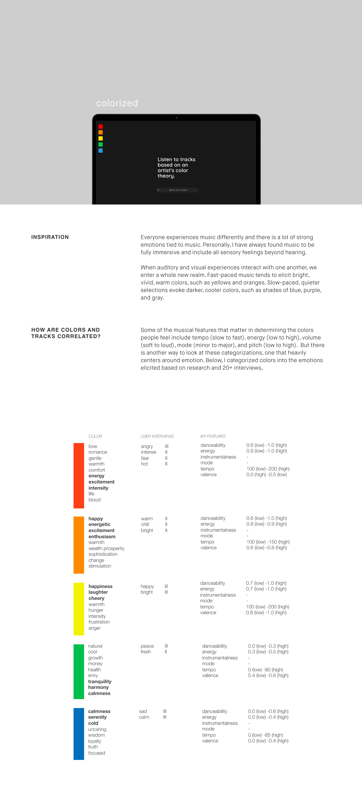

<html>
	<head>
		<title>Rebecca Yeap</title>
		<link rel="stylesheet" type="text/css" href="assets/css/bootstrap.min.css">
		<link rel="stylesheet" type="text/css" href="assets/css/colorized.css">
		<meta name="viewport" content="width=device-width, initial-scale=1.0">
	</head>
</html>
<body>
	<div id="navbar">
		<div id="labels-container">
		<div class="headerlabels" style="display: flex;">
				<div class="about">
					<a href="about.html">ABOUT</a> 
				</div>
				<div class="work">
					<a href="work.html">WORK</a> 
				</div>
				<div class="nonwork">
					<a href="nonwork.html">WORK</a> 
				</div>
			</div>
		</div>
		<div>
			<!---->
		</div>
	</div>
	<div class= "container-fluid" id="about_block"> 
		<div class="row">
			<div class="col-md-6 offset-md-2">
				<div style="padding-top: 100px; margin-left: 50px">
					<h2> colorized </h2>
					<p>product design | front-end web development</p>
				</div>
				<div class="row">
					<div class="col-md-6" style="padding-top: 20px;margin-left: 50px">
					<p>This past November, I participated at <a href="https://calhacks.io/">Cal Hacks</a>, the largest annual 36- hours collegiate hackathon with my computer science friends (Kaden Dippe, Alan Nguyen). Using <a href="https://developer.spotify.com/documentation/web-api/reference/tracks/get-audio-features/?fbclid=IwAR2eytBZcMBWwJCUa0uGNa6z6acHG-BpdKw6XCpOm9StRJtIhltbZJeyZl8/">Spotify's API Track Feature Set</a>, we created a web platform that connects artist's tracks through colors. A user could search their favorite artist, explore the colors associated with the artist, and listen to the monochromatically color-coded tracks.
					 </p>  
					<p>My role in the team included the user interviews on color and emotion to inform the specification for the track feature set (detailed below), initial prototype design, and front-end web development. Welcome to <a href="https://spotify-colorized.herokuapp.com">colorized</a>.</p>
					</div>
				</div>
				
			</div>
		</div>

		<div class="row">
			<div class="col-md-8 offset-md-2"> 
				
			</div>
			
		</div>
	</div>
		
</body>
</html>